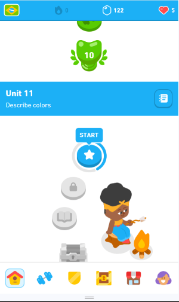

Hick's Law
Hick's law is the concept that the more stimuli or choices a user faces, the longer they will take to make a decision. The social media webstie Instagram does a great job of taking advantage of this principle, as their site focuses on one post at a time, has intuitive buttons to react to each post, and makes it really easy to mindlessly scroll from one post to the next.
Visual Hierarchy
Duolingo
Visual hierarchy is the practice of arranging elements of a page to show the order of their importance. The language learning website Duolingo employs this principle very well as they mark the progress you have made with bright colors, making it easy to see what the next button to click is as you're learning a language.
White Space
White space, or blank space, is needed in every site in order to balance out heavy content with a clean look. The search engine google is a very good example of using white space, as they focus all their content in the middle of the screen and leave the rest of it blank, making the content on the page pop and seem easy to digest and interact with.